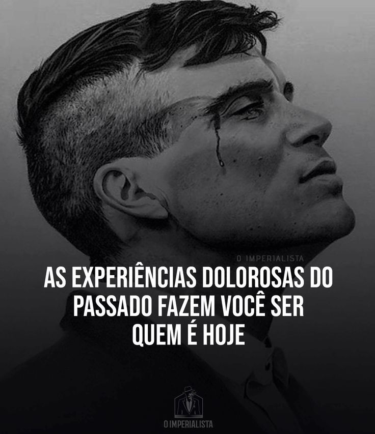

SOBRE MIM

EUZINHO
Olá, sou Gustavo Anibal e tenho 18 anos, faço IOT no Senac Nações Unidas.

REFLEXÃO SOBRE O ENSINO MEDIO
Ao longo deses trêz anos de Senac apremdi a trabalhar em equipe e a cada atividade realizada me ajudou na formação dos meus pensamentos.
EXPERIENCIAS
Acredito muito que cada atividade que voce viu nas abas das areas me ajudou muito na minha forrmação como pessoal, principalmente me preparar para o mercadp de trabalho.